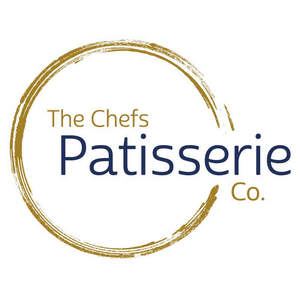
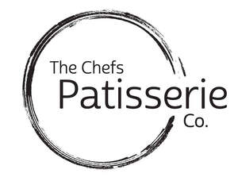

Trade Mark Journal No.2025/024 13 June 2025
UK00004187345 10 April 2025 (30)
Mark 1

Mark 2

- Class 30
- Macaroons [pastry]; Pastry; Pastries; Chocolate pastries; Macarons; Croissants; Pâté [pastries]; Bakery goods; Chocolate fillings for bakery products; Eclairs; Mousse confections; Danish pastries; Almond pastries; Chocolate confectionary; Savory pastries; Fondants [confectionery]; Brioches; Prepared desserts [pastries]; Shortcrust pastry; Truffles [confectionery]; Muesli desserts; Chocolate desserts; Chocolate confections; Pastries, cakes, tarts and biscuits (cookies); Gateaux; Chocolate confectionery; Ice-cream cakes; Chocolate for confectionery and bread; Gluten-free bakery products; Dessert souffles; Prepared desserts [confectionery]; Custards [baked desserts]; Confectionery; Filo pastry; Strawberry gateaux; Pastry mixes; Pastries with fruit; Fruit pastries; Frozen pastry; Almond confectionery; Meringues; Long-life pastry; Chocolate confectionery having a praline flavour; Chocolate cakes; Crepes; Confectionery bars; Chocolate flavoured confectionery; Profiteroles; Chocolate marzipan; Sweets (Non-medicated -) in the nature of chocolate eclairs; Pastry dough; Frozen pastries; Puff pastry; Flour confectionery; Truffles (rum -) [confectionery]; Madeleines; Baguettes; Tiramisu; Puddings for use as desserts; Chocolate confectionery containing pralines; Chocolate sweets; Mousses (Chocolate -); Chocolate mousses; Sherbet [confectionery]; Dessert puddings; Chocolate confectionery products; Confectionery chocolate products; Liquorice [confectionery]; Pastilles [confectionery]; Sherbets [confectionery]; Chocolate cake; Chocolate-based fillings for cakes and pies; Fruit filled pastry products; Dairy confectionery; Liqueur chocolates; Marzipan; Pastry shells; Cheesecakes; Marshmallow confectionery; Confectionery in the form of mousses; Coconut macaroons; Sesame confectionery; Caramels [sweets]; Fruit confectionery; Vegan cakes; Custard tarts; Pastries containing creams; Chocolate-coated sugar confectionery; Mallows [confectionery]; Cream cakes; Ice cream gateaux; Savoury biscuits; Pastries filled with fruit; Confectionery chips for baking; Chocolate decorations for cakes; Cake doughs; Liquorice flavoured confectionery; Custard-based fillings for cakes and pies; Pastries containing creams and fruit; Gâteaux; Breakfast cake; Aperitif biscuits; Chocolate coffee; Flavourings for cakes; Sweets; Non-medicated chocolate confectionery; Prepared desserts [chocolate based]; Chocolate truffles; Cakes; Baklava; Chocolate biscuits; Cocoa-based ingredients for confectionery products; Orange based pastry; Fruit jellies [confectionery]; Jellies (Fruit -) [confectionery]; Mint for confectionery; Pastry cases; Tarts [sweet or savoury]; Quiches [tarts]; Pralines; Cake frosting; Cake icing; Cake frosting [icing]; Frosting [icing] (Cake -); Icing for cakes; Cake batter; Sponge cake; Candy cake; Cake dough; Almond cake; Treacle cake; Cake Pops; Cake mixes; Cake bars; Cake powder; Powder (Cake -); Candy cake decorations; Cake preparations; Cake mixtures; Cupcakes; Sponge cakes; Dough for cakes; Cake decorations made of candy; Deep chocolate cake made with chocolate sponge; Iced sponge cakes; Iced cakes; Fruit cakes; Tea cakes; Fruit cake snacks; Plum cakes; Chocolate covered cakes; Cheesecake; Iced fruit cakes; Candy decorations for cakes; Crystallized sugar for decorating cakes; Barm cakes; Ice cream cakes; Icing; Cakes (Rice -); Chimney cakes; Malt cakes; Moon cakes; Flavorings for cakes; Chocolate-coated rice cakes; Frozen cakes; Half-moon-shaped rice cake [songpyeon]; Flapjacks [griddle cakes]; Chocolate brownies; Sponge fingers [cakes]; Icing sugar; Candied cakes of popped rice; Powder for making cakes; Mixes for making cakes; Brownies; Frozen yogurt cakes; Half-moon-shaped cake of rice containing sweet or semi-sweet fillings (songpyeon); Frosting mixes; Icing mixes; Mixtures for making cakes; Brownie dough; Rice-based pudding dessert; Steamed sponge cakes (fagao); Chocolate covered wafer biscuits; Petits fours [cakes]; Tortes; Pavlovas flavoured with hazelnuts; Puddings; Mousses; Crème brûlées; Creme brulees; Christmas puddings; Panettone; Vol-au-vents; Pavlovas made with hazelnuts; Treacle tarts; Fondants; Shortbreads; Instant dessert puddings; Bonbons; Milk chocolate teacakes; Shortbread with a chocolate flavoured coating; Sherbets [confectionery ices]; Chocolate flavourings; Coulis (Fruit -) [sauces]; Fruit coulis [sauces]; Chocolates; Chocolate-coated berries; Chocolates in the form of pralines; Chocolate creams; Tart shells; Apple tarts; Tarts; Pies [sweet or savoury]; Egg tarts; Blueberry pies; Custard; Mousse (sweet); Biscuits [sweet or savoury]; Meringue; Pineapple fritters; Biscuits flavoured with fruit; Fruited scones; Pie crusts; Fruit pies; Savory biscuits; Apple pies; Apple fritters; Covered tarts; Crackers flavoured with fruit; Fruited malt loaf; Mincemeat pies; Prepared pie crust mixes; Shortcake; Jam filled brioches; Caramel; Sorbet; Sweetmeats [candy] being flavoured with fruit; Apple sauce [condiment]; Fruit jelly candy; Filled yeast dough with fillings consisting of fruits; Caramel coated popcorn with candied nuts; Frozen pastry sheets; Phyllo dough; Filo dough; Filo doughs; Biscotti dough; Spring roll skin [pastry]; Skin [pastry] for spring rolls; Poppy seed pastry; Viennese pastries; Frozen biscotti dough; Quiche [tart]; Flour for doughnuts; Dough; Cookie dough; Bread doughs; Frozen cookie dough; Frozen brownie dough; Danish bread rolls; Shortbread biscuits; Fried dough cookies; Quiche; Bread biscuits; Danish bread; Cream pies; Cream buns; Pre-baked bread; Wafer dough; Shortbread; Ready-to-bake dough products; Butter biscuits; Bread buns; Marshmallow creme; Crème caramel; Crème brûlée; Creme caramels; Custard powder; Chocolate sauce; Shortbread with a chocolate coating; Ice cream desserts; Chocolate fondue; Chocolate topping; Chocolate caramel wafers; Custards; Chocolate syrup; Waffles with a chocolate coating; Cream puffs; Chocolate coated marshmallow biscuits containing toffee; Chocolate coated nougat bars; Dairy-free chocolate; Salted butter caramel; Chocolate; Marshmallow topping; Marshmallow; Custard mixes; Chocolate shells; Frozen custards; Sauces for ice cream; Milk puddings; Ice cream; Ice cream substitute; Rice puddings; Dairy ice cream; Ice-cream; Crumb; Fruit bread; Caramel popcorn; Toffee; Caramel coated popcorn; Caramels; Honeycomb toffee; Chocolate fudge; Butterscotch chips; Salted butter fudge; Caramels [candies]; Chocolate candies; Chocolate sauces; Chocolate syrups; Soft caramels; Caramel-coated popcorn; Chocolate for toppings; Caramelised sugar; Chocolate waffles; Pralines made of chocolate; Milk chocolate; Dulce de leche; Shortbread part coated with a chocolate flavoured coating; Biscuits containing chocolate flavoured ingredients; Flavourings of almond; Chocolate coated fruits; Nougat; Fudge; Vegan ice cream.
The Chefs Patisserie Company Ltd